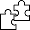

<div data-footer-modal class="footer-backdrop is-hidden">
  <div class="footer-modal">
    <form action="" class="footer-modal__form">
      <button
        data-close-footer-modal
        type="button"
        class="footer-modal__closesvgbutton"
      >
        <svg
          class="modal__closesvg"
          xmlns="http://www.w3.org/2000/svg"
          width="17"
          height="17"
          viewBox="0 0 17 17"
          fill="none"
        >
          <path
            d="M1 1L8.5 8.5M16 16L8.5 8.5M8.5 8.5L16 1L1 16"
            stroke="black"
          />
        </svg>
      </button>
      <h2 class="footer-modal__title">Дякую за підписку!</h2>
      
      
      
      
    </form>
  </div>
</div>
